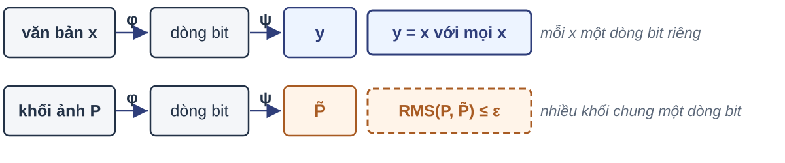
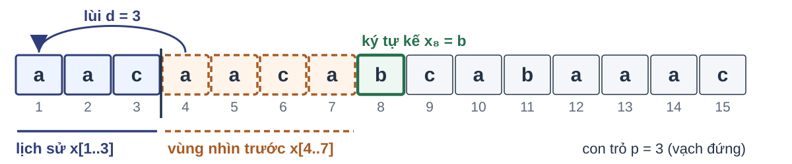
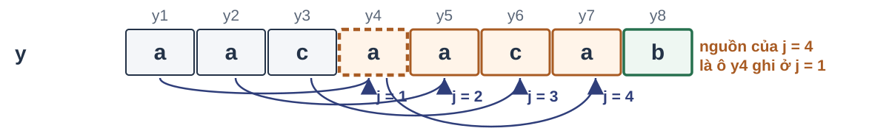
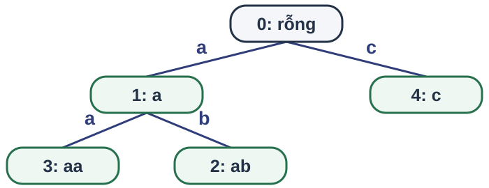
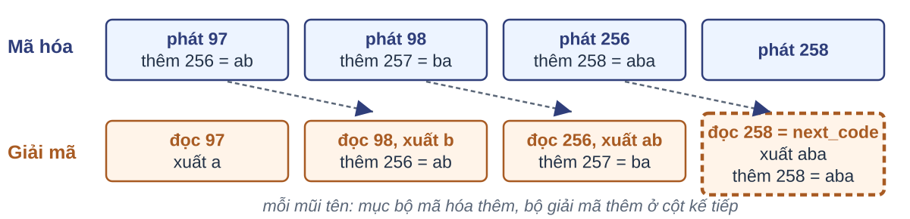
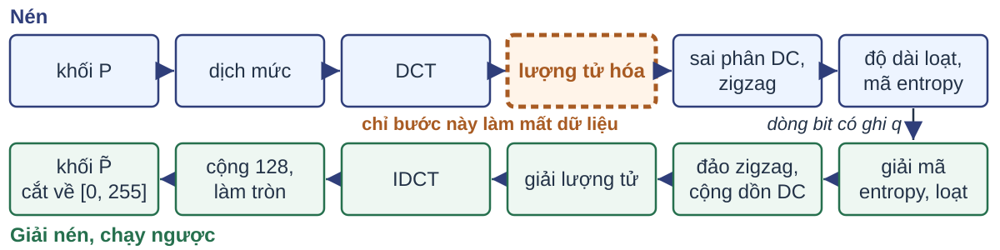
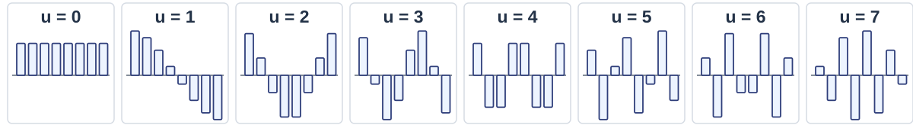
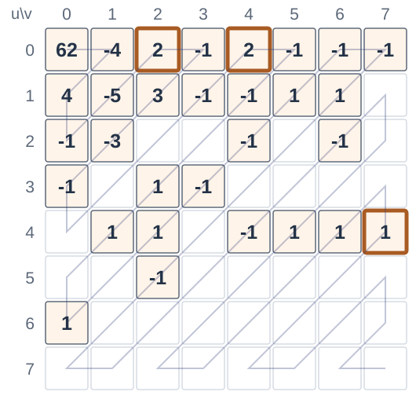

Bài 11 · LZ77, LZ78, LZW và JPEG
Dữ liệu phải khôi phục đúng được nén bằng từ điển mà bộ giải mã tự dựng lại; ảnh chỉ cần khôi phục gần đúng được nén bằng lượng tử hóa hệ số cosine, với sai số bị chặn theo bước lượng tử.
Giải thuật nền tảng của Khoa học dữ liệu
Học kỳ 1 · Năm học 2026–2027
Trường Đại học Công nghệ · Đại học Quốc gia Hà Nội
Nhắc lại:
Ký hiệu: $x=x_1\cdots x_n$ trên $\Sigma$, $\lvert\Sigma\rvert=256$; $m$ số mẫu.
Sau bài, người học có thể:
Đọc trước: Nelson và Gailly, Chương 7–9, 11.
Câu hỏi: Một kho văn bản phải khôi phục đúng từng byte; một danh mục $1\,000$ ảnh, 64 MB, chỉ cần khôi phục gần đúng. Thuật toán nào đạt từng đặc tả trong một lượt đọc với bộ nhớ hữu hạn, và đổi lại được bao nhiêu byte?
Bộ giải nén trả lại ảnh gốc hoặc một ảnh gần nó; khi chỉ cần khôi phục gần đúng, nhiều ảnh được chung một dòng bit.
Ví dụ 11.1. Ảnh CHEETAH.GS, $64\,000$ điểm 8 bit, hệ số chất lượng (quality factor) $q$:
| $q$ | byte | bit mỗi điểm | RMS |
|---|---|---|---|
| 1 | $27\,809$ | $3{,}48$ | $4{,}3$ |
| 2 | $18\,367$ | $2{,}30$ | $6{,}9$ |
| 25 | $5\,094$ | $0{,}64$ | $17{,}4$ |
Định nghĩa 11.1. Với $x=(x_1,\ldots,x_m)\in\mathcal X$, bộ nén $\varphi:\mathcal X\to\{0,1\}^*$, bộ giải nén $\psi:\{0,1\}^*\to\mathcal X$:
Mệnh đề 11.2. Giả thiết: $\mathcal X=\{0,\ldots,255\}^m$, $m\ge1$; $\lvert\varphi(x)\rvert<8m$ với mọi $x\in\mathcal X$. Kết luận: với mọi $\psi$, có ảnh $x$ để $\psi(\varphi(x))\ne x$.
Chứng minh. Có $2^{8m}$ ảnh nhưng chỉ $2^{8m}-1$ chuỗi bit ngắn hơn $8m$, nên $\varphi$ gán cùng dòng bit cho hai ảnh (Mệnh đề 10.2); $\psi$ trả một ảnh cho dòng bit đó, nên tái tạo sai ít nhất một ảnh.

Bài tập 11.1(b). Câu hỏi: Hai ảnh xám CHEETAH.GS và CLOWN.GS, mỗi ảnh $64\,000$ byte, được nén bằng chương trình của Nelson và Gailly ở năm hệ số chất lượng:
| $q$ | CHEETAH.GS | CLOWN.GS | ||
|---|---|---|---|---|
| byte | RMS | byte | RMS | |
| 1 | $27\,809$ | $4{,}3$ | $20\,835$ | $3{,}7$ |
| 2 | $18\,367$ | $6{,}9$ | $14\,243$ | $5{,}6$ |
| 5 | $10\,232$ | $10{,}9$ | $8\,636$ | $8{,}6$ |
| 10 | $7\,167$ | $13{,}6$ | $6\,355$ | $10{,}9$ |
| 25 | $5\,094$ | $17{,}4$ | $4\,811$ | $14{,}1$ |
(b) Với yêu cầu $E_{\mathrm{RMS}}\le10$, chọn trong năm hệ số trên hệ số lớn nhất cho mỗi ảnh và so số byte của hai ảnh.
Lời giải:
Với dữ liệu phải khôi phục đúng, phần còn khai thác được là cụm lặp: Huffman theo tần suất từng ký hiệu trả cho lần lặp thứ hai của aac trong aacaacabcabaaac cùng số bit như lần đầu.
Mỗi lần lặp của một cụm được thay bằng một bộ ba trỏ ngược vào phần vừa đọc.
Cửa sổ trượt · Bộ ba · Sao chép chồng lấn · Khôi phục đúng
Câu hỏi: đọc một lượt, giữ một đoạn hữu hạn, bộ mã hóa (encoder) mã mỗi lần lặp của một cụm bằng số bit cố định thế nào để bộ giải mã (decoder) giải đúng?
Trực quan. Huffman thay từng ký hiệu; LZ77 thay cả một cụm bằng bộ ba cỡ cố định $(d,\ell,c)$: lùi $d$, chép $\ell$ ký tự, viết thêm $c$.
aacaacabcabaaac, ba bộ ba đầuCỡ cửa sổ $W=6$, độ khớp tối đa $L=4$; con trỏ $p$: số ký tự đã mã hóa. Xác định ba bộ ba đầu.
| $p$ | đã mã hóa | so khớp | bộ ba |
|---|---|---|---|
| $0$ | rỗng | không có khoảng lùi | $(0,0,\mathrm a)$ |
| $1$ | a | $d=1$: $\ell=1$, ký tự kế $\mathrm c$ | $(1,1,\mathrm c)$ |
| $3$ | aac | $d=1,2,3$: $\ell=0,1,4$ | $(3,4,\mathrm b)$ |

Diễn giải: ba bộ ba phủ $1+2+5=8$ ký tự; ở $p=3$, nguồn $x_4$ nằm trong đoạn đang mã hóa, nên độ khớp vượt khoảng lùi.
Định nghĩa 11.4. Cho $W,L\ge1$ và con trỏ $0\le p<n$.
Lưu ý: có thể $\ell>d$, khi đó nguồn chồng lên đích.
Đầu vào: chuỗi $x_1\cdots x_n$; $W,L\ge1$, $W$ chung cho hai phía. Đầu ra: dãy bộ ba theo Định nghĩa 11.4, đóng khung (bộ giải mã biết khi nào hết bộ ba).
Ví dụ 11.3. Giải $(3,4,\mathrm b)$ sau $y=$ aac: $y_{3+j}\leftarrow y_j$, $j=1,\ldots,4$; bước $j=4$ đọc $y_4$ ghi ở $j=1$.

Đầu vào: bộ ba $(d_t,\ell_t,c_t)$, $t\le\tau$, đóng khung, không hỏng. Đầu ra: $y$.
Định lý 11.8. Giả thiết: $x\in\Sigma^n$; $W,L\ge1$; dãy bộ ba do Thuật toán 11.5 sinh từ $x$; Thuật toán 11.6 giải nó, chép tuần tự, giữ ít nhất $W$ ký tự cuối; dòng không hỏng.
Kết luận: Thuật toán 11.6 trả về $y=x$.
Lưu ý: kết luận đúng cho mọi dãy bộ ba hợp lệ nối từ $p=0$ tới $p=n$, kể cả không tham lam.
Nhắc lại: bất biến vòng lặp đúng lúc khởi tạo, được giữ qua mỗi lượt.
Bỏ chép tuần tự: chép khối cho $(3,4,\mathrm b)$ đọc $y_4$ trước khi ghi.
Mô hình: đếm phép so, phép ghi ký tự; xấu nhất; $\tau\le n$ bộ ba.
| Bước | Số lần | Chi phí mỗi lần | Đóng góp |
|---|---|---|---|
| mã hóa, 2.1 | $\tau$ | $\le\min(W,p)\,(L+1)$ phép so | $O(nWL)$ |
| mã hóa, 2.2–2.3 | $\tau$ | $O(W)$ | $O(nW)$ |
| giải mã | $\tau$ | $\ell_t+1$ phép ghi | $n$ |
Bộ nhớ: mã hóa $W+L+1$ ký tự, giải mã $W$ ký tự.
Bộ ba $\lceil\log_2W\rceil+\lceil\log_2(L+1)\rceil+8$ bit; $W=6$, $L=4$ cho 14 bit, có lợi khi mô tả hơn $1{,}75$ ký tự (Mệnh đề 11.9(d)).
Cụm chỉ dùng lại được khi lần trước còn trong cửa sổ; $W$ từ $4\,096$ lên $65\,536$ làm tìm vét cạn chậm 16 lần.
Hai phía dựng cùng một từ điển cụm từ chính dòng mã nhận được, nên không cần truyền từ điển.
Từ điển cụm · Cây từ điển · Cặp mã–ký tự · Đồng bộ hai từ điển
aabaacabcabcb, bốn cặp đầuCâu hỏi: giữ những cụm nào, và bộ giải mã biết chúng thế nào khi không có cửa sổ?
Trực quan. Như LZ77, mỗi cặp thay một cụm; khác ở chỗ trỏ vào danh sách cụm; hai phía cùng thêm đoạn vừa mã vào danh sách.
Xác định bốn cặp đầu.
| cụm, ký tự phá khớp | cặp | mục thêm |
|---|---|---|
| $\varnothing$, $\mathrm a$ | $(0,\mathrm a)$ | $D[1]=\texttt{a}$ |
| $\texttt{a}$, $\mathrm b$ | $(1,\mathrm b)$ | $D[2]=\texttt{ab}$ |
| $\texttt{a}$, $\mathrm a$ | $(1,\mathrm a)$ | $D[3]=\texttt{aa}$ |
| $\varnothing$, $\mathrm c$ | $(0,\mathrm c)$ | $D[4]=\texttt{c}$ |
Định nghĩa 11.11.
EOS là ký hiệu kết thúc dòng.Bổ đề 11.12. Với phép thêm $D[i]\,c$, $i$ đã có, mọi tiền tố của cụm trong $D$ cũng thuộc $D$; cụm khớp dài nhất tìm bằng cách đi xuống cây.

Đầu vào: chuỗi $x_1\cdots x_n$; từ điển không giới hạn. Đầu ra: dãy cặp $(i_1,c_1),\ldots,(i_\tau,c_\tau)$, đóng khung.
Bất biến: các cặp đã phát mô tả $x[1..p]$; $D[i]$ là phần đọc sau $p$.
Ví dụ 11.5. Giải $(0,\mathrm a)$, $(1,\mathrm b)$, $(1,\mathrm a)$, $(0,\mathrm c)$: xuất a, ab, aa, c và thêm mục 1–4 trùng mục của bộ mã hóa.
Đầu vào: dãy cặp $(i_t,c_t)$, $t=1,\ldots,\tau$, đóng khung, không hỏng. Đầu ra: chuỗi $y$.
Định lý 11.15. Giả thiết: Thuật toán 11.14 giải dãy cặp do Thuật toán 11.13 sinh từ $x$; hai phía cùng từ điển đầu, quy tắc thêm mục, đánh mã; từ điển không giới hạn; dòng không hỏng.
Kết luận: sau cặp thứ $t$: (a) $D'$ (từ điển bộ giải mã) có $\lvert D'\rvert=\lvert D\rvert$, $D'[j]=D[j]$ với mọi $j$; (b) $y=x[1..p_t]$, $p_t$ ký tự của $t$ cặp đầu. Khi dừng, $y=x$.
EOS: đoạn cuối là $D[i_\tau]$, nên $y=x$.Bỏ cùng quy tắc: bộ giải mã chỉ thêm mục khi $i_t\ge1$ thiếu mã 1 ở $(1,\mathrm b)$.
Mô hình: phép tra con, thêm nút, ghi ký tự; từ điển tối đa $M$ mục.
Nhắc lại: băm đều, hệ số tải hằng cho tra, chèn kỳ vọng $O(1)$.
| Bước | Số lần | Chi phí mỗi lần | Đóng góp |
|---|---|---|---|
| tra con | $n$ | $O(1)$ kỳ vọng | $O(n)$ |
| thêm nút | $\tau\le n$ | $O(1)$ | $O(\tau)$ |
| giải mã | $\tau$ | $\lvert D[i_t]\rvert+1$ phép ghi | $n$ |
Bộ nhớ $\le M$ nút; cặp $\lceil\log_2M\rceil+9$ bit, $M=2^{16}$ cho 25 bit, có lợi khi mô tả hơn $3{,}125$ ký tự.
Mỗi cặp vẫn mang một ký tự thô: 6 trong 13 ký tự của aabaacabcabcb.
Bộ giải mã dựng lại đúng mọi cụm dù luôn biết từ điển muộn hơn bộ mã hóa một bước.
Từ điển nạp sẵn · Mã kế tiếp · Độ trễ một mục · Mã chưa có trong từ điển
aabaacabcabcb, mã LZWCâu hỏi: bỏ ký tự thô khỏi đơn vị mã thế nào mà bộ giải mã vẫn dựng lại được từ điển và chuỗi?
Từ điển nạp sẵn (preloaded dictionary): 256 cụm một byte, mã bằng giá trị byte; mã mới từ 256.
Trực quan. Như LZ78, cụm kéo dài khi còn trong từ điển; khác ở chỗ ký tự phá khớp mở cụm kế tiếp.
Xác định dòng mã.
| $t$ | mã (cụm) | mục thêm | $t$ | mã (cụm) | mục thêm |
|---|---|---|---|---|---|
| 1 | $97\ (\texttt{a})$ | $256=\texttt{aa}$ | 6 | $257\ (\texttt{ab})$ | $261=\texttt{abc}$ |
| 2 | $97\ (\texttt{a})$ | $257=\texttt{ab}$ | 7 | $260\ (\texttt{ca})$ | $262=\texttt{cab}$ |
| 3 | $98\ (\texttt{b})$ | $258=\texttt{ba}$ | 8 | $98\ (\texttt{b})$ | $263=\texttt{bc}$ |
| 4 | $256\ (\texttt{aa})$ | $259=\texttt{aac}$ | 9 | $99\ (\texttt{c})$ | $264=\texttt{cb}$ |
| 5 | $99\ (\texttt{c})$ | $260=\texttt{ca}$ | 10 | $98\ (\texttt{b})$ | — |
Đầu vào: chuỗi byte $x_1\cdots x_n$; từ điển không giới hạn. Đầu ra: dòng mã $k_1,\ldots,k_\tau$, đóng khung bằng $\tau$.
Với $w_t=D[k_t]$ và $\operatorname{first}$ là ký tự đầu, mục thêm khi phát $k_t$, $t<\tau$, là $w_t\operatorname{first}(w_{t+1})$ (Định nghĩa 11.18).
Ví dụ 11.7. Giải 97, 97, 98: bộ giải mã chỉ thêm được $D[256]=\texttt{aa}$ khi đọc mã thứ hai, chậm hơn bộ mã hóa một mục.
Ví dụ 11.8. Giả sử đầu vào abababa; bộ mã hóa phát $97,98,256,258$.

Đọc $258=\texttt{next\_code}$: cụm vừa xuất là $w=\texttt{ab}$, nên cụm mới là $w\operatorname{first}(w)=\texttt{aba}$; thêm $258=\texttt{aba}$.
Diễn giải: các cụm a, b, ab, aba nối lại thành abababa.
Nhánh 3.2 xử lý mã mà bộ mã hóa vừa thêm. Đầu vào: dòng mã $k_1,\ldots,k_\tau$, đóng khung, không hỏng; hai phía cùng nạp sẵn, cùng mã đầu 256. Đầu ra: chuỗi $y$.
Định lý 11.23. Giả thiết: $x$ chuỗi byte, $n\ge1$; Thuật toán 11.20 giải dòng mã $k_1,\ldots,k_\tau$ do Thuật toán 11.19 sinh từ $x$, $w_t=D[k_t]$; hai phía cùng từ điển nạp sẵn, cùng mã đầu 256, cùng quy tắc thêm mục; dòng không hỏng; từ điển không giới hạn.
Kết luận: sau mã $k_t$: (a) $y=w_1\cdots w_t$; (b) $w=w_t$; (c) các mục $256,\ldots,254+t$ của hai phía trùng nhau. Khi dừng, $y=x$.
Quy nạp theo $t$.
Bỏ nhánh 3.2: dòng $97,98,256,258$ không giải được.
Mô hình: tra theo khóa (mã của $w$, $c$), thêm, ghi ký tự; băm đều, hệ số tải $\alpha<1$ hằng; mã $b$ bit, $M=2^b$ mục.
| Bước | Số lần | Chi phí mỗi lần | Đóng góp |
|---|---|---|---|
| tra $w\,c$ | $n-1$ | $O(1)$ kỳ vọng | $O(n)$ |
| phát và thêm | $\tau-1$ | $O(1)$ | $O(\tau)$ |
| giải mã | $\tau$ | $\lvert w_t\rvert$ phép ghi | $n$ |
Dòng mã $\tau b$ bit, bộ nhớ $O(M)$ mục (Mệnh đề 11.24); aabaacabcabcb với mã 9 bit: 90 so với 104 bit.
Trên ảnh chụp, cụm khớp đúng rất ngắn, nên ba thuật toán LZ gần như không rút ngắn được ảnh.
Chỉ bước lượng tử hóa bỏ dữ liệu, và sai số tái tạo bị chặn theo độ thô của bước đó.
Dịch mức · Biến đổi cosine · Lượng tử hóa · Thứ tự zigzag · Mã độ dài loạt
Ảnh chỉ cần khôi phục gần đúng: CHEETAH.GS, $64\,000$ điểm, $E_{\mathrm{RMS}}$ dưới ngưỡng chọn trước, bộ nhớ vài hàng, thời gian tuyến tính.
Câu hỏi: bỏ phần nào của khối để giảm byte mà sai số vẫn bị chặn?
JPEG (Joint Photographic Experts Group): biến đổi cosine rời rạc (discrete cosine transform, DCT), lượng tử hóa (quantization), mã hóa entropy (entropy coding).

Trực quan. Các điểm trong một khối gần nhau; viết khối thành tổng 64 mẫu cosine thì phần lớn năng lượng (tổng bình phương) dồn vào vài hệ số tần số thấp.
$$P=\begin{bmatrix} 140&144&147&140&140&155&179&175\\ 144&152&140&147&140&148&167&179\\ 152&155&136&167&163&162&152&172\\ 168&145&156&160&152&155&136&160\\ 162&148&156&148&140&136&147&162\\ 147&167&140&155&155&140&136&162\\ 136&156&123&167&162&144&140&147\\ 148&155&136&155&152&147&147&136 \end{bmatrix}$$Tính hệ số DC: tổng $9\,680$, trung bình $151{,}25$; dịch mức $A=P-128$ (hàng $\xi$, cột $\eta$) có tổng $1\,488$; mẫu tần số 0 gồm tám giá trị $1/\sqrt8$, nên $F_{00}=\tfrac18\sum_{\xi,\eta}A_{\xi\eta}=1\,488/8=186$.
Định nghĩa 11.26. Dịch mức (level shift): $A=P-128$, giá trị trong $\{-128,\ldots,127\}$. Ma trận DCT $T=(T_{u\xi})$, $u,\xi\in\{0,\ldots,7\}$:
$$T_{0\xi}=\tfrac1{\sqrt8},\qquad T_{u\xi}=\tfrac12\cos\tfrac{(2\xi+1)u\pi}{16}\quad(u\ge1).$$DCT của $A$ là $F=TAT^{\top}$; $F_{00}$ là hệ số DC (DC coefficient). Biến đổi ngược (inverse DCT, IDCT) của $G$ là $T^{\top}GT$.

Hàng $u$ của $T$ đổi dấu đúng $u$ lần.
Ví dụ 11.10. Trên khối CHEETAH.GS, hệ số DC chiếm khoảng $80\%$ tổng bình phương các hệ số.
Trực quan. Như thước vạch thưa, bước 5 ghi mọi số trong $(-22{,}5;-17{,}5]$, kể cả $F_{01}$, thành $-4$.
Định nghĩa 11.29. Bước lượng tử $Q_{uv}=1+(1+u+v)\,q$; lượng tử hóa làm tròn tới số nguyên gần nhất, xa 0 khi phần lẻ $\tfrac12$: $\hat F_{uv}=\operatorname{round}(F_{uv}/Q_{uv})$; giải lượng tử (dequantization) $\tilde F_{uv}=Q_{uv}\hat F_{uv}$.
Ví dụ 11.11. Khối CHEETAH.GS, $q=2$, $Q_{uv}=3+2(u+v)$.
Có 30 số khác 0; hàng cuối toàn 0.
Định lý 11.31. Giả thiết: $F=TAT^{\top}$ và $\tilde A=T^{\top}\tilde FT$ tính bằng số thực chính xác; lượng tử hóa làm tròn tới số nguyên gần nhất; $\tilde A$ chưa làm tròn, chưa cắt. Kết luận:
$$\begin{aligned}E_{\mathrm{RMS}}(A,\tilde A)&=\sqrt{\tfrac1{64}\textstyle\sum_{u,v}(F_{uv}-\tilde F_{uv})^2}\\&\le\beta(q)=\tfrac12\sqrt{\tfrac1{64}\textstyle\sum_{u,v}Q_{uv}^2}.\end{aligned}$$Với $q=2$, $\beta(2)\approx9{,}10$; khối CHEETAH.GS tái tạo có $E_{\mathrm{RMS}}(A,\tilde A)=4{,}18$ mức xám (Ví dụ 11.12).
Ý nghĩa: cận không phụ thuộc nội dung ảnh, nên chọn được $q$ trước khi nén.
Nhắc lại: $X$ trực chuẩn khi $XX^{\top}=I$; khi đó $X^{-1}=X^{\top}$.
Khối $\hat F$ vẫn gồm 64 số nguyên, trong đó 34 số 0.
Trực quan. Đọc theo đường chéo $u+v$ tăng dần thì phần lớn số 0 đứng thành loạt dài về cuối dãy; mỗi loạt ghi bằng một số đếm.
Định nghĩa 11.32.
Giả sử khối liền trước có $\hat F_{00}=60$, nên $\delta=2$. Xác định dãy bộ của khối.
Diễn giải: 64 số của khối thu gọn thành 31 bộ.
Mệnh đề 11.33. Giả thiết: mỗi khối đúng 64 số, các bộ truyền đúng. Kết luận: bộ giải mã dựng lại đúng $\hat F^{(\kappa)}$, nên chỉ lượng tử hóa làm mất dữ liệu.

Chỉ bước lượng tử hóa phụ thuộc $q$. Đầu vào: ảnh xám 8 bit, cạnh chia hết cho 8; $q$. Đầu ra: dòng bit có ghi $q$; giải nén cho $\tilde P$ cùng cỡ.
Mô hình: phép nhân (DCT, IDCT), phép chia (lượng tử hóa), xử lý một hệ số (bước khác); $K=m/64$ khối.
| Bước | Số lần | Chi phí mỗi lần | Đóng góp |
|---|---|---|---|
| dịch mức | $K$ | 64 phép trừ | $m$ |
| DCT | $K$ | $1\,024$ phép nhân | $16m$ |
| lượng tử hóa | $K$ | 64 phép chia | $m$ |
| sai phân, zigzag, loạt, entropy | $K$ | $O(64)$ | $O(m)$ |
| giải nén | $K$ | $64+1\,024$ phép nhân, $O(64)$ | $O(m)$ |
Thời gian $\Theta(m)$; bộ nhớ một dải $8\times m_{\mathrm w}$ điểm, $m_{\mathrm w}$ điểm mỗi hàng.
Bảo đảm: theo Mệnh đề 11.33 và Định lý 11.31, ảnh tái tạo có $E_{\mathrm{RMS}}\le\beta(q)+\tfrac12$ khi DCT, IDCT chính xác.
Đặc tả khôi phục và dạng dư thừa của dữ liệu quyết định nên dùng bộ nén nào.
Bảng kết quả · Bảng thuật toán · Vấn đề trung tâm · Bài tập về nhà
| Kết quả | Giả thiết không được bỏ | Công thức hoặc thuật toán |
|---|---|---|
| Mệnh đề 11.2 | $\lvert\varphi(x)\rvert<8m$ với mọi ảnh $x$ | có $x$: $\psi(\varphi(x))\ne x$ |
| Định lý 11.8 (LZ77) | chép tuần tự; giữ $W$ ký tự cuối | $y_{p+j}\leftarrow y_{p+j-d}$, $j$ tăng dần; $y=x$ |
| Định lý 11.15 (LZ78) | cùng từ điển đầu, quy tắc thêm mục, đánh mã, xử lý từ điển đầy | $D'[j]=D[j]$ sau mỗi cặp; $y=x$ |
| Định lý 11.23 (LZW) | cùng nạp sẵn, mã đầu 256, xử lý từ điển đầy; dòng không hỏng | $k=\texttt{next\_code}\Rightarrow e=w\operatorname{first}(w)$; $y=x$ |
| Định lý 11.31 | DCT chính xác; lượng tử hóa làm tròn | $E_{\mathrm{RMS}}(A,\tilde A)\le\beta(q)=\tfrac12\sqrt{\tfrac1{64}\sum Q_{uv}^2}$ |
| Mệnh đề 11.33 | mỗi khối đúng 64 số | chỉ lượng tử hóa làm mất dữ liệu |
Mô hình: so, tra hoặc ghi ký tự; phép nhân cho DCT; kỳ vọng khi băm đều.
| Thuật toán | Đầu vào | Bảo đảm | Chi phí |
|---|---|---|---|
| LZ77 (Thuật toán 11.5, 11.6) | chuỗi $n$ ký tự; $W$, $L$ | $y=x$ | mã hóa $O(nWL)$, giải mã $n$ phép ghi; bộ ba $\lceil\log_2W\rceil+\lceil\log_2(L+1)\rceil+8$ bit |
| LZ78 (Thuật toán 11.13, 11.14) | chuỗi; từ điển $M$ mục | $y=x$ nếu chung quy tắc từ điển đầy | kỳ vọng $O(n)$; cặp $\lceil\log_2M\rceil+9$ bit |
| LZW (Thuật toán 11.19, 11.20) | chuỗi byte; mã $b$ bit, $M=2^b$ | $y=x$ nếu chung quy tắc từ điển đầy, kể cả mã chưa có | kỳ vọng $O(n)$; $\tau b$ bit |
| Nén theo khối (Thuật toán 11.34) | ảnh $m$ điểm; $q$ | $E_{\mathrm{RMS}}\le\beta(q)$ mỗi khối | $\Theta(m)$; $1\,024$ phép nhân mỗi khối |
aabaacabcabcb: 70, 72, 90 bit (LZ77, LZ78, LZW) so với 104.Bài tập 11.14. Câu hỏi: LZSS kiểu gzip phát một trong hai dạng mục, với chữ số đầu là bit cờ (flag bit):
| mục | dùng khi | thao tác |
|---|---|---|
| $(0,d,\ell)$ | $\ell\ge3$ | chép $\ell$ ký tự từ khoảng lùi $d$; $p\leftarrow p+\ell$ |
| $(1,c)$, $c=x_{p+1}$ | $\ell<3$ | ghi ký tự rời $c$; $p\leftarrow p+1$ |
Tại con trỏ $p$, bộ mã hóa tính độ khớp dài nhất $\ell$ và khoảng lùi $d$ như bước 2.1–2.2 của Thuật toán 11.5, với $1\le d\le\min(W,p)$, cận $\ell\le\min(L,n-p)$ thay cho $\min(L,n-p-1)$, và cho phép $\ell>d$.
$x=\texttt{aacaacabcabaaac}$, $n=15$, $W=6$, $L=4$; ba mục đầu: $(1,\mathrm a),(1,\mathrm a),(1,\mathrm c)$.
(a) Xác định mục thứ tư. (b) Hoàn tất dãy mục tới hết chuỗi và đếm số mục của mỗi dạng.
Lời giải:
aaca khớp $x[1..4]$; độ khớp $4\ge3$, nên mục thứ tư là $(0,3,4)$, con trỏ lên $p=7$.Câu hỏi: trả lời và nêu kết quả đã dùng.
A bằng lệnh chép khối thì sai ở đâu?| Mục | Bài tập |
|---|---|
| 1. Khôi phục đúng và khôi phục gần đúng | 11.1 (câu (b) trên lớp) |
| 2. Nén bằng cửa sổ trượt LZ77 | 11.2, 11.3; 11.12, 11.13, 11.14 (trên lớp) |
| 3. Nén bằng từ điển cụm LZ78 | 11.4; 11.15 (trên lớp) |
| 4. Thuật toán LZW | 11.5, 11.6; 11.16 (trên lớp) |
| 5. Nén ảnh JPEG dựa trên DCT | 11.7, 11.8, 11.9, 11.10; 11.17 (trên lớp) |
| 6. Chọn phương pháp nén | 11.11 |
Năm bài trên lớp kiểm từng bước của ba bộ nén từ điển và lý do JPEG biến đổi theo khối.
Vết LZ77 · Bộ ba chồng lấn · Vết LZ78 · Mã chưa có · Mã hóa theo khối
Bài tập 11.12. Câu hỏi: $x=\texttt{aacaacabcabaaac}$, $n=15$, mã hóa bằng Thuật toán 11.5 với $W=6$ và $L=4$; ba bộ ba đầu $(0,0,\mathrm a),(1,1,\mathrm c),(3,4,\mathrm b)$, sau đó $p=8.$
Nguồn: Blelloch, CMU 15-499, phần nén bằng từ điển, trang chiếu 5.
Bài tập 11.13. Câu hỏi: Bộ giải mã LZ77 (Thuật toán 11.6) đã dựng bản giải mã $y=$ abcd, tức $p=4$, và đọc bộ ba kế tiếp $(d,\ell,c)=(2,9,\mathrm e)$.
Nguồn: Blelloch, CMU 15-499, phần nén bằng từ điển, trang chiếu 6.
Bài tập 11.15. Câu hỏi: $x=\texttt{aabaacabcabcb}$, $n=13$, mã hóa bằng Thuật toán 11.13; bốn cặp đầu $(0,\mathrm a),(1,\mathrm b),(1,\mathrm a),(0,\mathrm c)$ mô tả $x[1..6]=\texttt{aabaac}$.
Nguồn: Blelloch, CMU 15-499, phần nén bằng từ điển, trang chiếu 13.
Lời giải:
abc.abcb; chuỗi hết với $i=0$, không có cặp EOS.a, ab, aa, c, abc, abcb; nút 5 là con của 2 qua $\mathrm c$, nút 6 là con của 5 qua $\mathrm b$.a, ab, aa, c, abc, abcb; sau cặp thứ $t$ mỗi phía có $t+1$ mục và mục mới trùng nhau, cuối cùng $y=x$.Bài tập 11.16. Câu hỏi: Dòng mã $k_1,\ldots,k_\tau$ của một chuỗi được tạo bằng Thuật toán 11.19 và giải bằng Thuật toán 11.20; từ điển của hai phía không giới hạn số mục.
Đầu vào chứa liền nhau đoạn $\chi\,S\,\chi\,S\,\chi$, với $\chi$ là một ký tự, $S$ là một chuỗi và cụm $\chi\,S$ đã có mã trong từ điển.
Bộ mã hóa phát mã $k_t$ của cụm $\chi\,S$ và thêm mục $\chi\,S\,\chi$; ngay sau đó nó phát $k_{t+1}$, mã của chính mục vừa thêm.
Bộ giải mã đọc $k_t$ và xuất $\chi\,S$, rồi đọc $k_{t+1}$ và không thấy mã này trong từ điển của mình.
Nguồn: Blelloch, CMU 15-499, phần nén bằng từ điển, trang chiếu 16.
Lời giải:
Bài tập 11.17. Câu hỏi: Một phép biến đổi tuyến tính dùng để nén ảnh được chọn theo ba mục tiêu:
Dựa trên ba mục tiêu trên và chi phí tính toán, trả lời hai câu sau và dẫn số hiệu các kết quả của ghi chú được dùng.
Nguồn: Blelloch, CMU 15-499, phần nén mất dữ liệu, trang chiếu 11.
Lời giải: